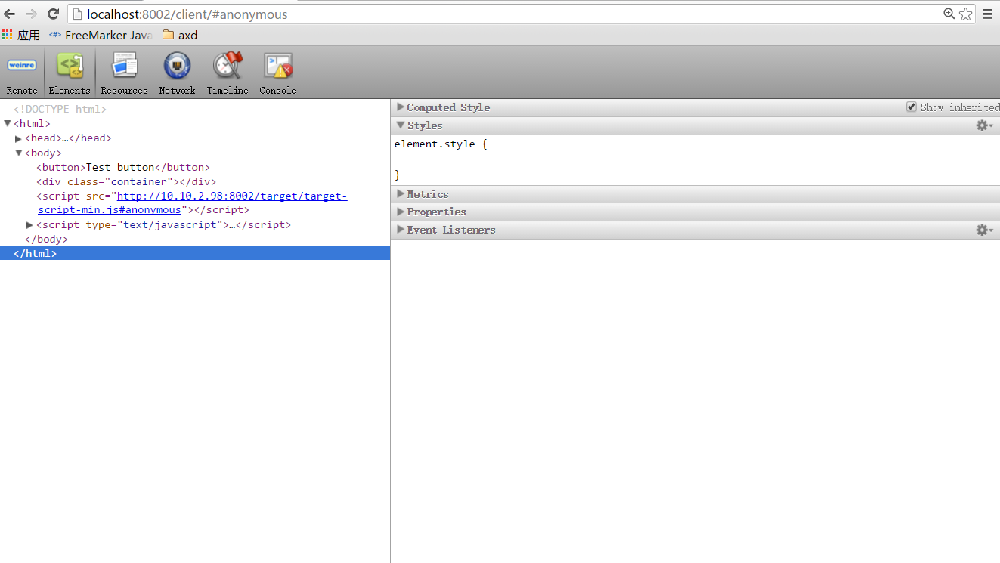
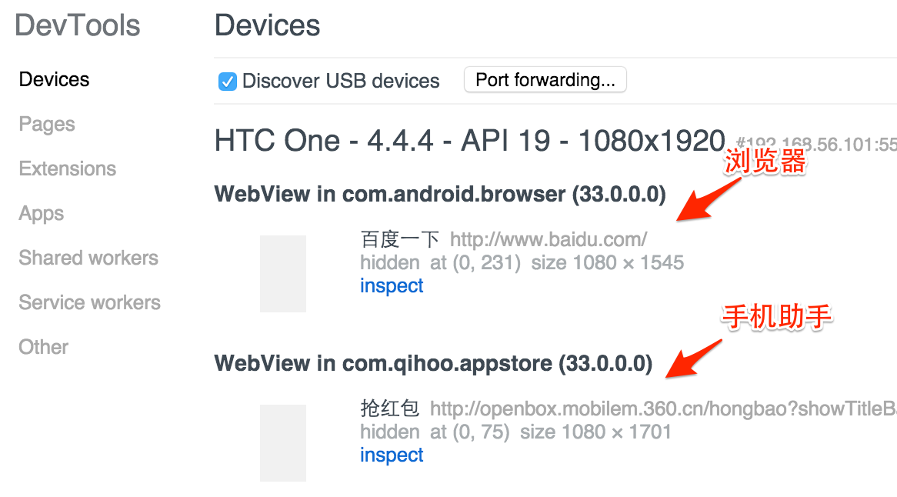

debugger;
console.log();
alert('');
移动端web应用调试工具 Web Inspector Remote
weinre基于node，可以使用npm快速安装
npm install -g npm
使用命令 “weinre --boundHost -all-” 进行启动。 打开本地浏览器访问 http://localhost:8080
默认启动的端口是8080，如果本地8080端口被占用，可以使用--httpPort指定打开的端口
--boundHost 需要为服务器绑定的ip地址，默认为localhost
--httpPort 指定的端口，默认为8080
//将如下代码写入到页面上
打开server端页面进行调试
chrome版本必须高于32
测试机的Android版本必须高于4.4
Android测试机使用数据线链接电脑，并打开 “USB调试”；
PC的chrome打开 Chrome://inspect 即可找到设备；
手机进入一个webview页，即可在chrome上看到调试台；
点击inspect进行模拟调试
